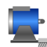

PartialBasicMachinePartial model for all machines |

|
Diagram
{kind=link}
Information
This information is part of the Modelica Standard Library maintained by the Modelica Association.
Base partial model DC machines:- main parts of the icon
- mechanical shaft
- mechanical support
If useSupport = false, it is assumed that the stator is fixed.
Otherwise reaction torque (i.e., air gap torque, minus acceleration torque for stator's moment of inertia) can be measured at support.
One may also fix the shaft and let rotate the stator; parameter Js is only of importance when the stator is rotating.
Parameters (5)
| Jr |
Value: Type: Inertia (kg·m²) Description: Rotor's moment of inertia |
|---|---|
| useSupport |
Value: false Type: Boolean Description: Enable / disable (=fixed stator) support |
| Js |
Value: Jr Type: Inertia (kg·m²) Description: Stator's moment of inertia |
| useThermalPort |
Value: false Type: Boolean Description: Enable / disable (=fixed temperatures) thermal port |
| frictionParameters |
Value: Type: FrictionParameters Description: Friction loss parameter record |
Outputs (4)
| phiMechanical |
Default Value: flange.phi - internalSupport.phi Type: Angle (rad) Description: Mechanical angle of rotor against stator |
|---|---|
| wMechanical |
Default Value: der(phiMechanical) Type: AngularVelocity (rad/s) Description: Mechanical angular velocity of rotor against stator |
| tauElectrical |
Default Value: inertiaRotor.flange_a.tau Type: Torque (N·m) Description: Electromagnetic torque |
| tauShaft |
Default Value: -flange.tau Type: Torque (N·m) Description: Shaft torque |
Connectors (2)
Components (5)
| frictionParameters |
Type: FrictionParameters Description: Friction loss parameter record |
|
|---|---|---|
| inertiaRotor |
Type: Inertia |
|
| inertiaStator |
Type: Inertia |
|
| fixed |
Type: Fixed |
|
| friction |
Type: Friction |
Extended by (2)
|
Modelica.Electrical.Machines.Interfaces
Partial model for DC machine |
|
|
Modelica.Electrical.Machines.Interfaces
Partial model for induction machine |